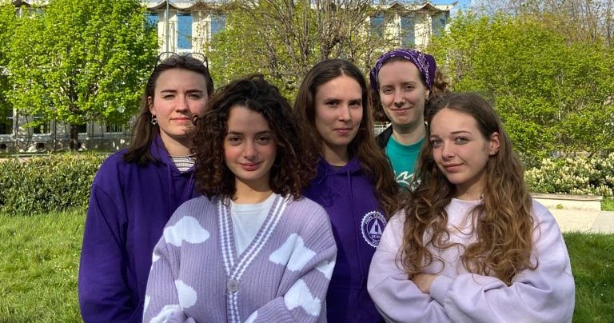

Notre Projet

Préambule du programme
Aujourd’hui les inégalités de genre sont encore centrales dans notre société, une des raisons : la maternité. Elle contraint les femmes physiquement, géographiquement et professionnellement, le seul remède : réduire le nombre de naissances.
L’urgence écologique nécessite elle aussi une réponse collective et radicale. La régulation démographique est une solution à la surconsommation, l’exploitation des ressources naturelles et la pollution généralisée.
Le manque de solidarité au cœur des politiques publiques de ces dernières années, réduisant l’immigration, les aides sociales et les échanges entre les différents groupes sociaux nous force à agir de manière forte et intransigeante.
L’Alliance Féministe Ecologique et Décoloniale (l’AFED) a été fondée pour proposer une alternative et une solution face à l’impasse du débat démocratique actuel. Notre parti est géré en collégialité par un groupe de 5 personnes pour arrêter les dérives autoritaires de la Ve République (personnification de l’autorité, trop nombreux pouvoirs du président), et réfléchir à un renouveau du système politique français en concertation avec les citoyen.ne.s.
Nous savons que ces mesures peuvent inquiéter voir choquer et remettent en question nos modes de vie, mais ce dont nous sommes convaincues c’est de la nécessité de ces mesures. Nous voulons avancer ensemble, en concertation perpétuelle avec nos concitoyen.ne.s pour un monde durable.
Nous croyons en un renouveau de la société où la réduction du nombre d’enfants pourra réunir les citoyen.ne.s autour d’un projet ambitieux, égalitaire, visionnaire et surtout, nécessaire.
Le Grand
Retournement
LIMITER LE NOMBRE D’ENFANTS
POURQUOI ?
Pour réduire la pollution, les émissions de gaz à effet de serre et arrêter la quête infinie de la croissance et de la surconsommation.
Pour arracher à la racine la cause de l’exploitation du corps et du potentiel des femmes dans la société.
Pour permettre aux politiques publiques d’être plus généreuses et sensibles à chacun
______________________________
COMMENT ?
En sensibilisant la population aux conséquences de la procréation dès l’école sur la planète et le corps des femmes et en fournissant une véritable éducation sexuelle à chacun.e.
En facilitant l’adoption, tout en veillant particulièrement à la légalité des réseaux internationaux d’adoption (référence à des scandales récents) et en sensibilisant aux problématiques décoloniales.
En encourageant la co-parentalité (exemple : des ami-es qui élèvent un ou plusieurs enfants ensemble), et donc la possibilité de tuteur-rices légaux-ales multiples. En ce sens, étendre la PMA à (absolument) toutes les femmes.
En faisant passer pour toute personne ou tout groupe de personnes souhaitant un enfant, passer un examen (une partie théorique et une partie de mise en pratique) pour prévenir les violences intrafamiliales. Stages de “rattrapages possibles” pour les personnes n’ayant pas réussi l’examen. L’examen sera co-construit par des institutions de santé publique et par une Assemblée représentative de la population.
En allongeant le délai légal de l’avortement.
En interdisant l’utilisation de la clause de conscience pour les médecins refusant de pratiquer l’avortement.
En faisant la promotion d'une politique de l’enfant unique sur le moyen terme.
UNE ÉDUCATION ÉGALITAIRE
POURQUOI ?
Pour assurer une éducation égalitaire en réduisant à la racine les différences de capitaux culturels humains etc en prenant en charge l’éducation des enfants et en les sensibilisant à l’ouverture culturelle pour qu’il puisse trouver eux même leur propre voie
Pour réduire les inégalités sociales genrées, puisque sinon les femmes endossent la majeure partie des tâches domestiques et éducatives, ce qui nuit à leur épanouissement personnel (ex : charge mentale) et professionnel (ex: femmes plus souvent en temps partiel ).
Pour lutter contre la surconsommation induite par l’éducation des enfants ( jouets, choix de nourriture ou de loisirs extrêmement néfastes pour l’environnement) est limitée car les choix des structures de prise en charge seront établies rationnellement dans une logique d’efficacité, d’éthique, d’écologie et de solidarité.
Pour stopper les violences au sein des familles.
Pour débarrasser l’espace public des enfants, des potentiels accidents domestiques et de leur nuisance sonore.
______________________________
COMMENT ?
En créant des Internats d’enfants dès le plus jeune âge, une école améliorée et à temps plein pour lisser les inégalités
En créant des Ateliers d’orientation manuels, littéraires, scientifiques etc ouverts à tous pour développer ses propres goûts et personnalités
En ayant des moments de solidarité de coopération de jeu entre les enfants de manière mixte
En proposant une éducation débarrassée de transmissions de biais racistes sexistes et homophobe.
En proposant aux parents d’avoir la garde de leur enfant 1 semaine dans le mois le reste étant à la charge de l’Etat.
POUR UNE SOCIÉTÉ PLUS JUSTE
La limitation du nombre d’individus dans la société réduit les violences animales et écologiques
Nous assurons une meilleure insertion professionnelle car moins de différence d’origine sociale.
Nous créons des places à l’université pour faire disparaître la sélection.
Nous répartissons les personnes sans logement dans les logements inoccupés (résidences secondaires comprises) et les logements trop grands pour leurs occupants.
Nous Garantissons un revenu universel et inconditionnel à tou-tes, qui permette de vivre dignement en l’absence d’autres revenu.
Nous accueillons de manière inconditionnelle les personnes immigrées, leur garantissons des conditions de vie dignes et facilitons leurs démarches de régularisation ainsi qu’autoriser le regroupement familial. L’accueil de travailleurs étrangers facilités par la réduction de population permet de financer le système de retraites et de sécurité sociale.
POUR UNE REFONTE DEMOCRATIQUE
Nous proposons un système représentatif débarrassé de la figure de président mais une collégiale composée de plusieurs individus aux idées et compétences différentes mais prenant les décisions en concertation.
Nous souhaitons une VI e République plus juste, démocratique et représentative du peuple et des enjeux majeurs de notre époque.
Nous souhaitons remplacer le Sénat par le CESE qui aurait un avis décisionnel majeur parmi lesquels des citoyens tirés au sort, accompagnés par des professionnels et représentants du milieu syndical, associatif...